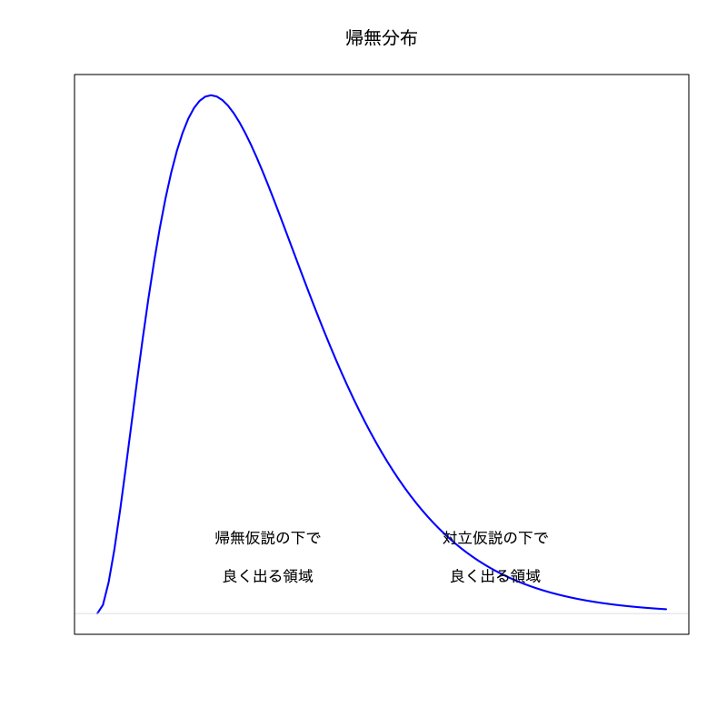
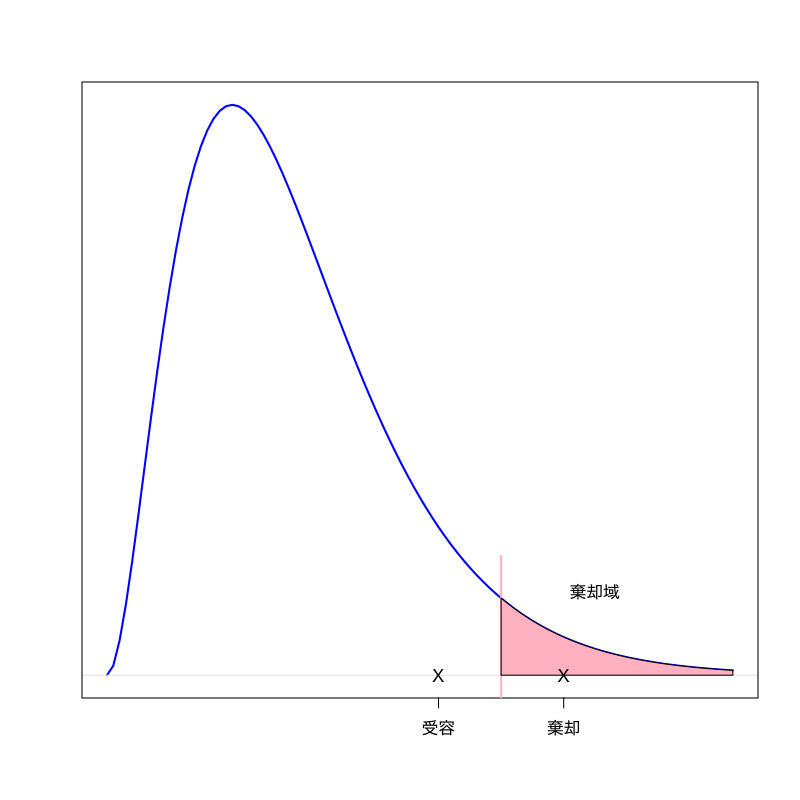
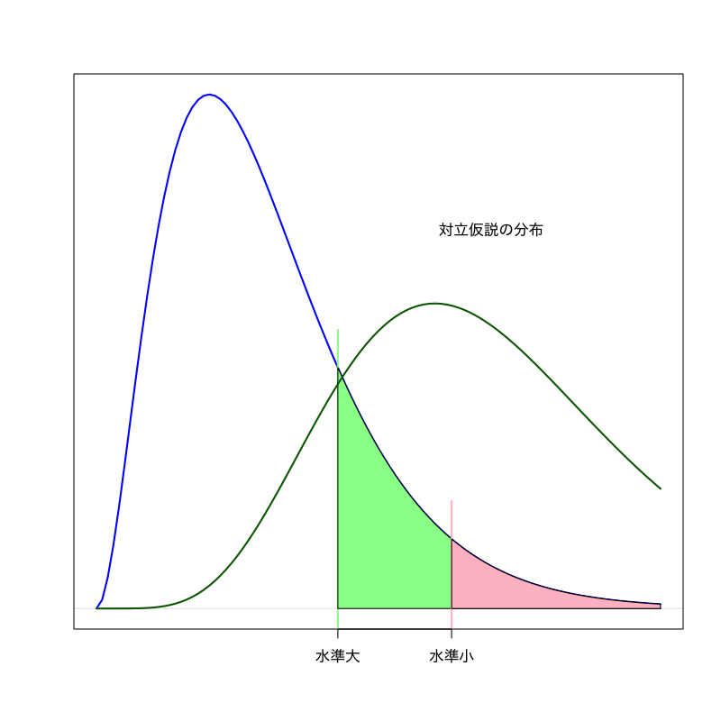
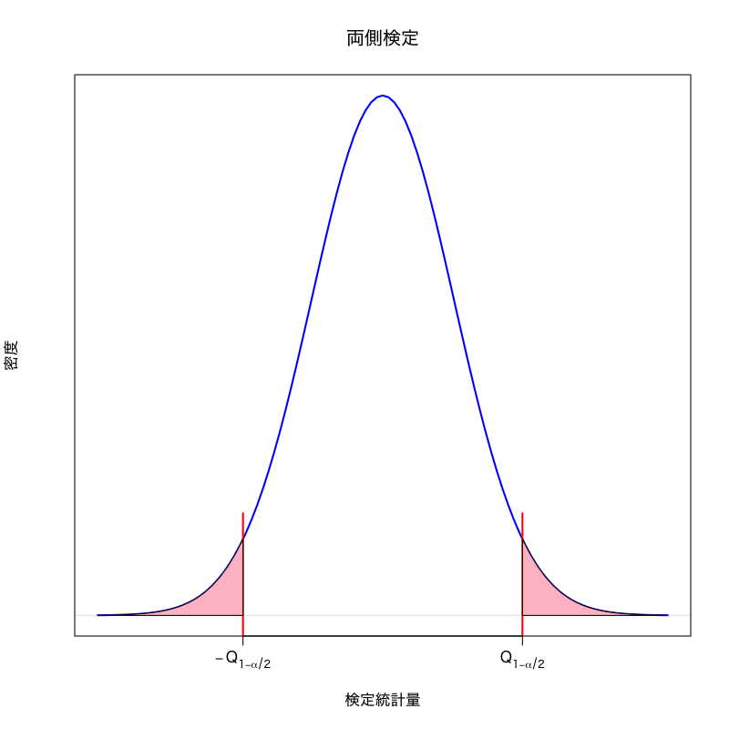
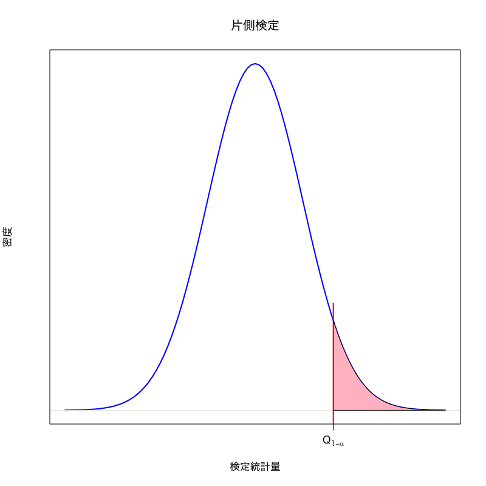
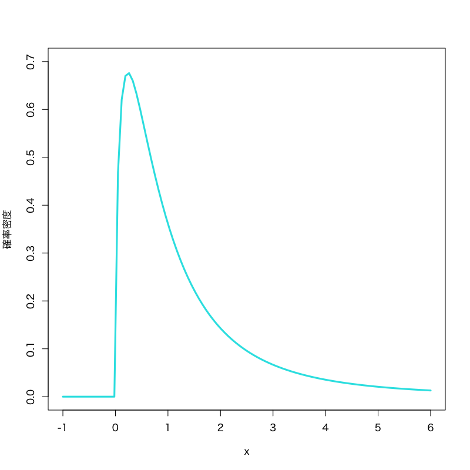

検定
第11講 - 仮説の正当性をデータから検証する
講義概要
- 検定
- 帰無仮説と対立仮説
- 棄却域
- \(p\) 値
- 平均の検定
- 分散の検定
- 平均の差の検定
- 分散の比の検定
検定とは
統計的仮説検定
- ある現象・母集団に対して仮定された仮説の真偽を データに基づいて統計的に検証する方法
薬の治験の例
新しい薬の効能が古い薬よりも優れていること(仮説)を 薬の治験結果(データ)から検証したい
- 推定と大きく異なるのは， 母集団の分布に対して何らかの 仮説 を考えるところ
検定の基本的手続き
- 仮説 を立てる
- 仮説のもとで 検定統計量 が従う標本分布を調べる
- 実際のデータから検定統計量の値を計算する
- 計算された検定統計量の値が 仮説が正しいときに十分高い確率で 得られるかどうかを判断する
検定における仮説
帰無仮説
検定統計量の分布を予想するために立てる仮説
対立仮説
“帰無仮説が誤っているときに起こりうるシナリオ”として想定する仮説
- 慣習として 帰無仮説を \(H_0\), 対立仮説を \(H_1\) で表す
- “帰無仮説を捨てて無に帰する”ことを期待する場合が多い
帰無仮説と対立仮説
- 薬の治験の例 (単純な場合)
- 帰無仮説 \(H_0\) : 新しい薬も古い薬も効能は同じ
- 対立仮説 \(H_1\) : 新しい薬と古い薬の効能は異なる
- 薬の治験の例 (新薬がより良いことを期待する場合)
- 帰無仮説 \(H_0\) : 新しい薬も古い薬も効能は同じ
- 対立仮説 \(H_1\) : 新しい薬の方が古い薬より効能が高い
検定の用語
帰無分布
帰無仮説が正しい場合に検定統計量が従う分布
棄却域
帰無仮説の下で統計量の取り得るべき範囲の外の領域
- 仮説検定
- 帰無仮説を 棄却 : 帰無仮説は誤っていると判断すること
- 帰無仮説を 受容 : 帰無仮説を積極的に棄却できないこと
- 検定の誤り
- 第一種過誤 : “正しい帰無仮説を棄却する”誤り
- 第二種過誤 : “誤った帰無仮説を受容する”誤り

Figure 1: 検定の考え方

Figure 2: 棄却と受容
検定の設計指針
- 検定統計量 \(T\) に対して棄却域 \(R\) を設計
サイズ : 第一種過誤が 起きる確率
\begin{equation} \text{(サイズ)} =P(\text{\(T\) が\(R\)に含まれる}|\text{帰無仮説が正しい}) \end{equation}検出力 : 第二種過誤が 起きない確率
\begin{equation} \text{(検出力)} =P(\text{\(T\) が\(R\)に含まれる}|\text{対立仮説が正しい}) \end{equation}
有意水準
第一種過誤が起きる確率(サイズ)として許容する上限

Figure 3: 検定の設計
棄却域の決め方
検定を構成する場合の一般的な戦略
棄却域 \(R_{\alpha}\) は以下のように設定する
- サイズを小さく (有意水準 \(\alpha\) 以下に) 抑える
可能な限り 検出力を大きく する
\begin{align} P(T \in R_{\alpha}|\text{帰無仮説が正しい}) &\le\alpha\\ P(T \in R_{\alpha}|\text{対立仮説が正しい}) &\to\text{最大化} \end{align}
- 対立仮説によって棄却域の形は変わりうる
\(p\) 値 (有意確率)
帰無分布における検定統計量の評価
検定統計量の値が棄却域に含まれる有意水準の最小値を考える
\(p\) 値 (有意確率) : (検定統計量 \(T\), 棄却域 \(R_{\alpha}\))
\begin{equation} \text{(\(p\) 値)} =\min\{\alpha\in(0,1)|\text{\(T\) が\(R_{\alpha}\)に含まれる}\} \end{equation}- \(p\) 値が有意水準未満のときに帰無仮説を棄却する
検定に関する注意
帰無仮説の受容の意味
帰無仮説が正しいと仮定しても矛盾は生じない
帰無仮説の正しさを積極的に支持する結果ではない
第二種過誤
一般に第二種過誤の起こる確率については何ら仮定がないため， その確率は非常に大きい可能性がある
1標本正規母集団
1標本データに対する仮定
観測データは独立同分布な確率変数列
\begin{equation} X_1,X_2,\dotsc,X_n \end{equation}- \(X_{i}\) は平均 \(\mu\), 分散 \(\sigma^2\) の正規分布に従う
- 以下では平均 \(\mu\) および分散 \(\sigma^2\) に対する検定を説明
平均の検定
平均の検定
両側検定
\(\mu_0\) を既知の定数として， 観測データを生成している分布の平均 \(\mu\) が \(\mu_0\) であるか否かを検定する
帰無仮説と対立仮説
\begin{equation} H_0:\mu=\mu_0\quad\text{vs}\quad H_1:\mu\neq\mu_0. \end{equation}
考え方
- 標本平均 \(\bar{X}\) (推定量) が 帰無仮説のもとでの真の平均 \(\mu_0\) とどの程度離れているかを検証
- 平均と分散の推定量を用いて検定統計量を構成
標本平均 (正規分布に従う)
\begin{equation} \bar{X}=\frac{1}{n}\sum_{i=1}^nX_i \end{equation}不偏分散 (\(\chi^2\) 分布に従う)
\begin{equation} s^2=\frac{1}{n{-}1}\sum_{i=1}^n(X_i-\bar{X})^2 \end{equation}
Studentの \(t\) 検定
\begin{equation} \text{検定統計量 : } t=\frac{\sqrt{n}(\bar{X}-\mu_0)}{s} \end{equation}- 帰無分布は自由度 \(n{-}1\) の \(t\) 分布
(帰無仮説 \(H_0\) のもとでの検定統計量 \(t\) の分布)
- 帰無分布は自由度 \(n{-}1\) の \(t\) 分布
- \(t\) 分布

Figure 4: \(t\) 分布 (自由度\(3\))
- 見本空間 : \((-\infty,\infty)\)
- 母数 : 自由度 \(\nu\)
密度関数 :
\begin{equation} f(x)= \frac{\Gamma\left(\frac{\nu+1}{2}\right)} {\sqrt{\nu\pi}\;\Gamma\left(\frac{\nu}{2}\right)} \left(1+\frac{x^{2}}{\nu}\right)^{-\frac{1}{2}(\nu+1)} \end{equation}
- 備考 : 標準正規分布と 自由度 \(\nu\) の \(\chi^{2}\) 分布 に従う独立な確率変数の比に関する分布で， 検定に利用される．
棄却域を用いる場合
- 有意水準を選択 : \(\alpha\in(0,1)\)
\(H_0\) の下で以下が成立
\begin{equation} P(|t|>t_{1{-}\alpha/2}(n{-}1))=\alpha \end{equation}- \(t_{1{-}\alpha/2}(n{-}1)\) : 自由度 \(n{-}1\) の \(t\) 分布の \(1{-}\alpha/2\) 分位点
第一種過誤の上限が \(\alpha\) の棄却域
\begin{equation} R_{\alpha}= \left(-\infty,-t_{1{-}\alpha/2}(n{-}1)\right) \cup\left(t_{1{-}\alpha/2}(n{-}1),\infty\right) \end{equation}
- データから検定統計量 \(t\) の値を計算
以下の場合，帰無仮説を棄却
\begin{equation} |t|>t_{1{-}\alpha/2}(n{-}1),\quad (t\in R_{\alpha}) \end{equation}
\(p\) 値を用いる場合
\(p\) 値を計算 ( \(f(x)\) : 自由度 \(n{-}1\) の \(t\) 分布の密度)
\begin{equation} \text{(\(p\) 値)} =2\int_{|t|}^\infty f(x)dx \end{equation}\(p\) 値が \(\alpha\) 未満なら帰無仮説を棄却
\begin{align} |t|>t_{1{-}\alpha/2}(n{-}1) &\Leftrightarrow \int_{-\infty}^{|t|}f(x)dx> \int_{-\infty}^{t_{1{-}\alpha/2}(n{-}1)}f(x)dx=1{-}\alpha/2\\ &\Leftrightarrow \int_{|t|}^\infty f(x)dx < \alpha/2 \Leftrightarrow 2\int_{|t|}^\infty f(x)dx < \alpha \end{align}
対立仮説の違い
薬の治験例
観測データ \(X_1,X_2,\dotsc,X_n\) (\(n\) 人の被験者の治験結果) に対する仮説
- 古い薬(高価)と新しい薬(安価)の効能が変わらない (両側検定)
- 古い薬に比べて新しい薬の効能が改善した
- 対立仮説によって棄却域の形は変わりうる


平均の検定
右片側検定
\(\mu_0\) を既知の定数として， 観測データを生成している分布の平均 \(\mu\) が \(\mu_0\) より大きいかを検定する
帰無仮説と対立仮説
\begin{equation} H_0:\mu=\mu_0\quad\text{vs}\quad H_1:\mu>\mu_0. \end{equation}- 検定統計量の標本分布
- 帰無仮説は同一なので検定統計量 \(t\) の帰無分布も同一となる
- 対立仮説の下で \(t\) の値は正の方向に大きくなると期待される
- 棄却域 “\(t>c\)” (\(c\) は正の数) を考えるのが自然
棄却域を用いる場合
- 有意水準を選択 : \(\alpha\in(0,1)\)
\(H_0\) の下で以下が成立
\begin{equation} P(t>t_{1{-}\alpha}(n{-}1))=\alpha \end{equation}- \(t_{1{-}\alpha}(n{-}1)\): 自由度 \(n{-}1\) の \(t\) 分布の \(1{-}\alpha\) 分位点
第一種過誤の上限が \(\alpha\) の棄却域
\begin{equation} R_{\alpha}= \left(t_{1{-}\alpha}(n{-}1),\infty\right) \end{equation}
- データから検定統計量 \(t\) の値を計算
以下の場合，帰無仮説を棄却
\begin{equation} t>t_{1{-}\alpha}(n{-}1) \end{equation}
\(p\) 値を用いる場合
\(p\) 値を計算 ( \(f(x)\):自由度 \(n{-}1\) の \(t\) 分布の密度)
\begin{equation} \text{(\(p\) 値)}= \int_{t}^\infty f(x)dx \end{equation}- \(p\) 値が \(\alpha\) 未満なら帰無仮説を棄却
平均の検定
左片側検定
反対向きの対立仮説 \(\mu < \mu_0\) を考えた検定
\begin{equation} H_0:\mu=\mu_0\quad\text{vs}\quad H_1:\mu < \mu_0. \end{equation}以下の場合，帰無仮説を棄却
\begin{equation} t < t_{\alpha}(n{-}1) \quad \text{(自由度 \(n{-}1\) の \(t\) 分布の \(\alpha\) 分位点)} \end{equation}
以下の \(p\) 値が \(\alpha\) 未満なら帰無仮説を棄却
\begin{equation} \text{(\(p\) 値)} =\int_{-\infty}^t f(x)dx \end{equation}
両側検定と片側検定
- 棄却域の形による分類
両側検定
ある定数 \(a < b\) を用いて \(\text{(棄却域)}=(-\infty,a)\cup(b,\infty)\)
右片側検定
ある定数 \(a\) を用いて \(\text{(棄却域)}=(a,\infty)\)
左片側検定
ある定数 \(a\) を用いて \(\text{(棄却域)}=(-\infty,a)\)
- 右片側検定と左片側検定を合わせて 片側検定 と呼ぶ
- 平均の検定の場合
- 対立仮説を \(H_{1}:\mu\neq\mu_{0}\) にとった場合は両側検定
- 対立仮説を \(H_{1}:\mu>\mu_{0}\) にとった場合は右片側検定
- 対立仮説を \(H_{1}:\mu<\mu_{0}\) にとった場合は左片側検定
\(t\) 検定の関数
使い方
t.test(x, # 1標本の場合 alternative = c("two.sided", "less", "greater"), mu = 0, conf.level = 0.95, ...) #' x : ベクトル． #' alternative: 対立仮説 (両側，左片側，右片側) #' mu: 検定対象の平均値 #' conf.level: 信頼区間の水準 (点推定・区間推定も行ってくれる) #' ...: 他のオプション．詳細は help(t.test) を参照
実習
分散の検定
分散の検定
両側検定
\(\sigma_0^2\) を既知の定数として， 観測データを生成している分布の分散 \(\sigma^2\) が \(\sigma_0^2\) であるか否かを検定する
帰無仮説と対立仮説
\begin{equation} H_0:\sigma^2=\sigma_0^2\quad\text{vs}\quad H_1:\sigma^2\neq\sigma_0^2 \end{equation}
考え方
- 不偏分散 \(s^2\) が 真の分散 \(\sigma_{0}^{2}\) とどの程度離れているかを検証
- 分散の推定量の性質を用いて検定統計量を構成
不偏分散 (\(\chi^2\) 分布に従う)
\begin{equation} s^2=\frac{1}{n{-}1}\sum_{i=1}^n(X_i-\bar{X})^2 \end{equation}
\(\chi^2\) 検定
\begin{equation} \text{検定統計量 : } \chi^2=\frac{(n{-}1)s^2}{\sigma_0^2} \end{equation}- 帰無分布は自由度 \(n{-}1\) の \(\chi^2\) 分布
- \(\chi^{2}\) 分布

Figure 5: \(\chi^{2}\) 分布 (自由度\(3\))
- 見本空間 : \([0,\infty)\)
- 母数 : 自由度 \(\nu\)
密度関数 :
\begin{align} f(x)=& \frac{1}{2^{\nu/2}\Gamma(\frac{\nu}{2})}x^{\nu/2-1}e^{-x/2}\\ &\Gamma(z)=\int_0^\infty e^{-t}t^{z-1}dt \end{align}
- 備考 : \(\nu\) 個の標準正規分布に従う確率変数の2乗和の分布で， 検定に利用される．
棄却域を用いる場合
- 有意水準を選択 : \(\alpha\in(0,1)\)
\(H_0\) の下で以下が成立
\begin{equation} P(\chi^2 < \chi^2_{\alpha/2}(n{-}1) \text{ または }\chi^2>\chi^2_{1{-}\alpha/2}(n{-}1)) =\alpha \end{equation}- \(\chi^2_{\alpha/2}(n{-}1)\): 自由度 \(n{-}1\) の \(\chi^2\) 分布の \(\alpha/2\) 分位点
- \(\chi^2_{1{-}\alpha/2}(n{-}1)\): 自由度 \(n{-}1\) の \(\chi^2\) 分布の \(1{-}\alpha/2\) 分位点
第一種過誤の上限が \(\alpha\) となる棄却域
\begin{equation} R_{\alpha}= \left(-\infty,\chi^2_{\alpha/2}(n{-}1)\right) \cup\left(\chi^2_{1{-}\alpha/2}(n{-}1),\infty\right) \end{equation}
- データから検定統計量 \(\chi^2\) の値を計算
以下の場合，帰無仮説を棄却
\begin{equation} \chi^2 < \chi^2_{\alpha/2}(n{-}1) \text{ または }\chi^2>\chi^2_{1{-}\alpha/2}(n{-}1) \end{equation}
\(p\) 値を用いる場合
\(p\) 値を計算 ( \(f(x)\): 自由度 \(n{-}1\) の \(\chi^2\) 分布の密度)
\begin{equation} \text{(\(p\) 値)} =2\min\left\{\int_0^{\chi^2}f(x)dx,\int_{\chi^2}^\infty f(x)dx\right\} \end{equation}- \(p\) 値が \(\alpha\) 未満なら帰無仮説を棄却
片側検定
- 対立仮説が片側 (右側対立仮説) の場合
帰無仮説と対立仮説
\begin{equation}%\label{two-side} H_0:\sigma^2=\sigma_0^2\quad \text{vs}\quad H_1:\sigma^2>\sigma_0^2 \end{equation}
- 左側対立仮説 \(H_1:\sigma^2 < \sigma_0^2\) も以下の議論は同様
棄却域を用いる場合
- 自由度 \(n{-}1\) の \(\chi^2\) 分布の \(1{-}\alpha\) 分位点 : \(\chi^2_{1{-}\alpha}(n{-}1)\)
以下の場合，帰無仮説を棄却
\begin{equation} \chi^2>\chi^2_{1{-}\alpha}(n{-}1) \end{equation}
\(p\) 値を用いる場合
\(p\) 値を計算 ( \(f(x)\):自由度 \(n{-}1\) の \(\chi^2\) 分布の密度)
\begin{equation} \text{(\(p\) 値)} =\int_{\chi^2}^\infty f(x)dx \end{equation}- \(p\) 値が \(\alpha\) 未満なら帰無仮説を棄却
\(\chi^2\) 検定の計算
- 関数
chisq.testはあるが目的が違うので注意 (適合度検定・独立性検定) \(\chi^2\) 分布に関する関数を用いて直接計算することができる
x # 観測データ sigma0 # 帰無仮説で用いる標準偏差 n <- length(x) # データ数 chi2 <- (n-1)*var(x)/sigma0^2 # 検定統計量を計算する p0 <- pchisq(chi2, df=n-1) 2*min(p0, 1-p0) # p値 (両側検定の場合)
実習
2標本正規母集団
2標本データに対する仮定
2種類の観測データ
\begin{align} &X_1,X_2,\dotsc,X_m\\ &Y_1,Y_2,\dotsc,Y_n \end{align}- 3つの条件を仮定
- \(X_1,X_2,\dotsc,X_m,Y_1,Y_2,\dotsc,Y_n\) は 独立な確率変数列
- \(X_1,\dotsc,X_m\) は同分布で 平均 \(\mu_1\) 分散 \(\sigma_1^2\) の正規分布に従う
- \(Y_1,\dotsc,Y_n\) は同分布で 平均 \(\mu_2\) 分散 \(\sigma_2^2\) の正規分布に従う
- 両者の平均や分散が一致するかどうかを検定する
平均の差の検定
平均の差の検定
両側検定
2種類のデータの平均が等しいか否かを検定する
帰無仮説と対立仮説
\begin{equation}%\label{mean-equal} H_0:\mu_1=\mu_2\quad\text{vs}\quad H_1:\mu_1\neq\mu_2 \end{equation}
- Behrens-Fisher問題
- 正確かつ適切な検定を導出することは難しい
- Welch(またはSatterthwaite)の近似法
- \(\chi^2\) 分布に従う独立確率変数列の一次結合の分布を， 1つの \(\chi^2\) 分布に従う確率変数の定数倍の分布で近似する方法
- 平均と分散が元の確率変数と一致するように近似
考え方
\(X_1,\dotsc,X_m\) および \(Y_1,\dotsc,Y_m\) の不偏分散 : \(s_1^2\),\(s_2^2\)
\begin{equation} s_1^2=\frac{1}{m{-}1}\sum_{i=1}^m(X_i-\bar{X})^2,\quad s_2^2=\frac{1}{n{-}1}\sum_{i=1}^n(Y_i-\bar{Y})^2. \end{equation}- 標本平均と不偏分散の性質
- \(\bar{X}-\bar{Y},s_1^2,s_2^2\) は独立となる
- \((m{-}1)s_1^2/\sigma_1^2\) は自由度 \(m{-}1\) の \(\chi^2\) 分布に従う
- \((n{-}1)s_2^2/\sigma_2^2\) は自由度 \(n{-}1\) の \(\chi^2\) 分布に従う
Welchの近似法
- 詳細は資料を参照
- 確率変数 \(s_1^2/m+s_2^2/n\) の分布を \(c\chi^2_\nu\) の分布で近似
\(\chi^2_\nu\) は自由度 \(\nu\) の \(\chi^2\) 分布に従う確率変数
\begin{equation} c=\frac{\frac{(\sigma_1^2/m)^2}{m{-}1}+ \frac{(\sigma_2^2/n)^2}{n{-}1}}{\sigma_1^2/m+\sigma_2^2/n},\quad \nu=\frac{(\sigma_1^2/m+\sigma_2^2/n)^2}{\frac{(\sigma_1^2/m)^2}{m{-}1}+ \frac{(\sigma_2^2/n)^2}{n{-}1}} \end{equation}- 平均と分散を合わせる
検定統計量の近似
\begin{equation} t=\frac{\bar{X}-\bar{Y}}{\sqrt{s_1^2/m+s_2^2/n}} \simeq\frac{\bar{X}-\bar{Y}}{\sqrt{c\chi^2_\nu}} \end{equation}- \(\bar{X}-\bar{Y},s_1^2/m+s_2^2/n\) は独立
- \(\bar{X}-\bar{Y},c\chi^2_\nu\) も独立と考える
- \(t\) の分布は \((\bar{X}-\bar{Y})/\sqrt{c\chi^2_\nu}\) で近似できる
データの正規性から以下は標準正規分布に従う
\begin{equation} \frac{(\bar{X}-\bar{Y})-(\mu_1{-}\mu_2)} {\sqrt{\sigma_1^2/m+\sigma_2^2/n}} \sim \mathcal{N}(0,1) \end{equation}\(H_0\) の下で以下は自由度 \(\nu\) の \(t\) 分布に従う
\begin{equation} t\simeq \frac{\bar{X}-\bar{Y}}{\sqrt{c\chi^2_\nu}} =\frac{(\bar{X}-\bar{Y})/\sqrt{\sigma_1^2/m+\sigma_2^2/n}} {\sqrt{\frac{c}{\sigma_1^2/m+\sigma_2^2/n}\chi^2_\nu}} \end{equation}
- 検定統計量 \(t\) の帰無分布は自由度 \(\nu\) の \(t\) 分布で近似できる
Welchの \(t\) 検定
\(\nu\) は未知の分散 \(\sigma_1^2,\sigma_2^2\) を含むので 不偏推定量 \(s_1^2,s_2^2\) で代用し， 自由度 \(\hat{\nu}\) は次式を用いる．
\begin{align} \text{検定統計量 : } &t=\frac{\bar{X}-\bar{Y}}{\sqrt{s_1^2/m+s_2^2/n}}\\ \text{自由度 : } &\hat{\nu} =\frac{(s_1^2/m+s_2^2/n)^2} {\frac{(s_1^2/m)^2}{m{-}1}+\frac{(s_2^2/n)^2}{n{-}1}} \end{align}
棄却域を用いる場合
- 有意水準を選択 : \(\alpha\in(0,1)\)
棄却域
\begin{equation} \left(-\infty,-t_{1{-}\alpha/2}(\hat{\nu})\right) \cup\left(t_{1{-}\alpha/2}(\hat{\nu}),\infty\right) \end{equation}- \(t_{1{-}\alpha/2}(\hat{\nu})\) : 自由度 \(\hat{\nu}\) の \(t\) 分布の \(1{-}\alpha/2\) 分位点
- 検定統計量 \(t\) の値を計算
以下の場合は帰無仮説を棄却
\begin{equation} |t|>t_{1{-}\alpha/2}(\hat{\nu}) \end{equation}- \(p\) 値の計算や片側対立仮説への対応は前と同様
対応がある場合の平均の差の検定
- 対応がある観測データの平均の差の検定では 2種類のデータ間の自然な対応を考慮することがある
薬の投薬の例
- 2種類の薬の効能を比較するために被験者に両方の薬を投与
- 被験者 \(i\) にそれぞれの薬を投与した場合の治験結果: \(X_i,Y_i\)
- \(X_i\) と \(Y_i\) には“同一の被験者に対する治験結果”という意味で対応がある
- “対応がある観測値の差の平均が0” という帰無仮説を考える
- \(Z_i=X_i-Y_i\) \((i=1,\dotsc,n)\) として， \(Z_1,\dotsc,Z_n\) の平均が0か否かを検定すれば良い
\(t\) 検定の計算
使い方
t.test(x, y = NULL, # 2標本の場合 alternative = c("two.sided", "less", "greater"), mu = 0, paired = FALSE, var.equal = FALSE, conf.level = 0.95, ...) #' x,y: ベクトル．2標本の場合はyを指定する #' alternative: 対立仮説 (両側，左片側，右片側) #' mu: 検定対象の平均値 #' paired: 対応ありの場合は TRUE #' var.equal: 2標本の分散を同じとして良い場合は TRUE
実習
分散の比の検定
分散の比の検定
両側検定
2種類のデータの分散が等しいか否かを検定する
帰無仮説と対立仮説
\begin{equation} H_0:\sigma_1^2=\sigma_2^2\quad\text{vs}\quad H_1:\sigma_1^2\neq\sigma_2^2 \end{equation}
考え方
- \(X_1,\dotsc,X_m\) および \(Y_1,\dotsc,Y_n\)
の不偏分散: \(s_1^2\), \(s_2^2\)
- このとき \(s_1^2,s_2^2\) は独立 :
- \((m{-}1)s_1^2/\sigma_1^2\) 自由度 \(m{-}1\) の \(\chi^2\) 分布に従う
- \((n{-}1)s_2^2/\sigma_2^2\) は自由度 \(n{-}1\) の \(\chi^2\) 分布に従う
- このとき \(s_1^2,s_2^2\) は独立 :
\(F\) 検定
\begin{equation} \text{検定統計量 : } F=\frac{s_1^2}{s_2^2} \end{equation}- 帰無分布は自由度 \(m{-}1,n{-}1\) の \(F\) 分布
- \(F\) 分布

Figure 6: \(F\) 分布 (自由度\(3,5\))
- 標本空間: \([0,\infty)\)
- 母数: 自由度 \(\nu_{1},\nu_{2}\)
密度関数:
\begin{equation} f(x) = \frac{(\nu_{1}/\nu_{2})^{\nu_{1}/2}}{B(\nu_{1}/2,\nu_{2}/2)} \frac{x^{\nu_{1}/2-1}}{(1+\nu_{1}x/\nu_{2})^{(\nu_{1}+\nu_{2})/2}} \end{equation}- 備考 : 自由度 \(k_{1},k_{2}\) の \(\chi^2\) 分布に従う 独立な確率変数の比の分布で， 分散の検定に利用される．
棄却域を用いる場合
- 有意水準を選択 : \(\alpha\in(0,1)\)
\(H_0\) の下では以下が成立
\begin{equation} P(F < F_{\alpha/2}(m{-}1,n{-}1) \text{ または }F > F_{1{-}\alpha/2}(m{-}1,n{-}1))=\alpha \end{equation}- \(F_{\alpha/2}(m{-}1,n{-}1)\): 自由度 \(m{-}1,n{-}1\) の \(F\) 分布の \(\alpha/2\) 分位点
- \(F_{1{-}\alpha/2}(m{-}1,n{-}1)\): 自由度 \(m{-}1,n{-}1\) の \(F\) 分布の \(1{-}\alpha/2\) 分位点
第一種過誤の上限が \(\alpha\) の棄却域
\begin{equation} R_{\alpha}= \left(-\infty,F_{\alpha/2}(m{-}1,n{-}1)\right) \cup\left(F_{1{-}\alpha/2}(m{-}1,n{-}1),\infty\right) \end{equation}
- データから検定統計量 \(F\) の値を計算
以下の場合，帰無仮説を棄却
\begin{equation} F < F_{\alpha/2}(m{-}1,n{-}1) \text{ または }F>F_{1{-}\alpha/2}(m{-}1,n{-}1) \end{equation}- \(p\) 値の計算や片側対立仮説への対応は前と同様
\(F\) 検定の計算
使い方
var.test(x, y, ratio = 1, alternative = c("two.sided", "less", "greater"), conf.level = 0.95, ...) #' x,y: ベクトル． #' ratio: 検定する比率(1は同じかどうか) #' alternative: 対立仮説 (両側，左片側，右片側) #' conf.level: 信頼区間の水準 (点推定・区間推定も行ってくれる)
演習
次回の予定
- 分散分析とは
- 一元配置
- 一元配置のモデル
- 検定の構成
- 二元配置
- 二元配置のモデル
- 検定の構成